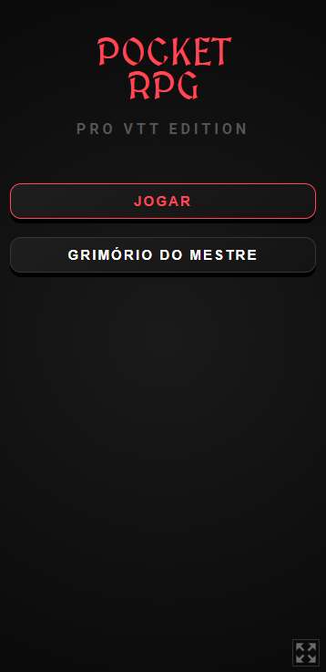
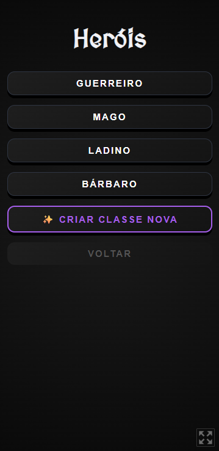
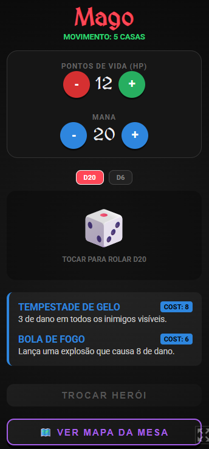
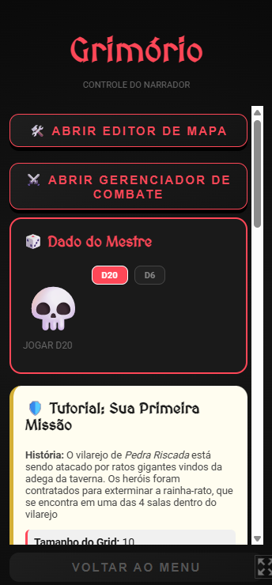
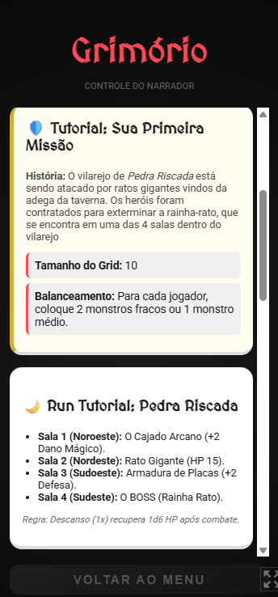
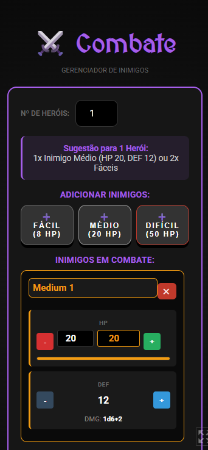
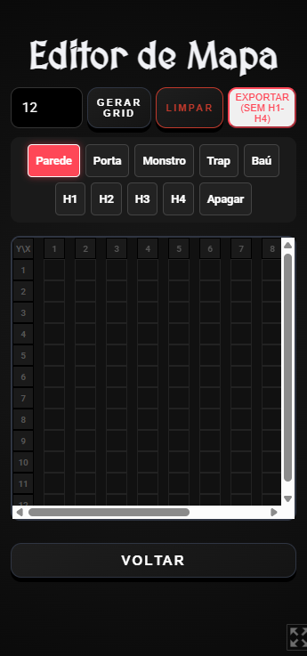

Pocket RPG
Uma VTT de bolso para RPG de mesa. Atende os dois lados da mesa: o jogador tem a ficha do personagem com HP, mana, habilidades e dados; o mestre tem o Grimório, com editor de mapa em grid, gerenciador de combate com balanceamento automático e até uma missão pronta para rodar.
01Sobre o projeto
RPG de mesa tem uma barreira de entrada alta: ficha em papel, dados que somem, mapa improvisado e o mestre fazendo conta de balanceamento na hora. As VTTs completas resolvem isso, mas são pesadas demais para uma mesa casual.
O Pocket RPG é o meio-termo: roda no navegador, cabe no celular e cobre o essencial. O jogador escolhe uma classe pronta (Guerreiro, Mago, Ladino, Bárbaro) ou cria a sua, e passa a ter ficha, dados D20/D6 e habilidades com custo de mana em uma tela só.
O lado do mestre é o mais completo. O editor de mapa monta o grid pintando paredes, portas, monstros, armadilhas e baús, e exporta o resultado. O gerenciador de combate sugere quantos inimigos usar conforme o número de heróis e controla HP, defesa e dano de cada um durante a luta.
02O que a ferramenta entrega
-
Fichas por classe
Guerreiro, Mago, Ladino e Bárbaro prontos — com HP, mana, movimento e habilidades.
-
Classes personalizadas
Criação de classe nova para mesas com regras próprias.
-
Rolagem de dados
D20 e D6 integrados à ficha, sem precisar de dado físico.
-
Habilidades com custo
Cada magia tem custo de mana e efeito descrito, controlados na própria ficha.
-
Editor de mapa
Grid configurável pintando parede, porta, monstro, armadilha, baú e heróis — com exportação.
-
Gerenciador de combate
Sugere o balanceamento pelo número de heróis e controla HP, defesa e dano dos inimigos.
-
Dado do mestre
Rolagem separada para o narrador, fora da vista dos jogadores.
-
Missão de exemplo
Tutorial jogável completo, com salas, monstros e regras de descanso.
03Capturas de tela
Registros da interface — preservados aqui mesmo que o sistema saia do ar.






